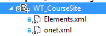

Introduction
On this post we will show how to use classical XML Feature provisioning approach to create a WebTemplate using Community Features.
As we already know, Microsoft recommends to use code provisioning approach rather than Feature XML technique in Office 365, even if using WebTemplate element in Office 365 is still 100% supported.
More info…
If you want to read more about provisioning techniques, remote provisioning, etc. you can read:
Anyway, if you solution requires to use elements.xml inside Sandboxed solutions, this post will show you how to create a simple Site Template using Community Template as a basis.
Click trough
First of all, create Visual Studio project and Add a new
Module(or empty element).Create
Elements.xmlandonet.xmlinside the module. A new feature will be created to deploy this module, if isn’t, just create a new site-scoped feature and include this item.
Elements.xmlOnet.xmlWith the above code, we can create new
Sitesusing our custom template. Let’s have some considerations about the code:
WebTemplate file should point to COMMUNITY BaseTemplateName.
Important: Without #0 ,,, it is added by SharePoint later.
It is really important to add NavBars element, otherwise we can get this error:
1
2
3
4
5System.NullReferenceException: Object reference not set to an instance of an object.
at Microsoft.SharePoint.Portal.CommunitySiteFeatureReceiver.CustomizeQuickLaunch(SPWeb web)
at Microsoft.SharePoint.Portal.CommunitySiteFeatureReceiver.FeatureActivated(SPFeatureReceiverProperties properties)
at Microsoft.SharePoint.SPFeature.DoActivationCallout(Boolean fActivate, Boolean fForce)
at Microsoft.SharePoint.SPFeature.Activate(SPSite siteParent, SPWeb webParent, SPFeaturePropertyCollection props, SPFeatureActivateFlags activateFlags, Boolean fForce)When enabling Publishing Features using Community template as a base, the WelcomePageUrl property doesn’t works, as a workaround we can setup with JSOM